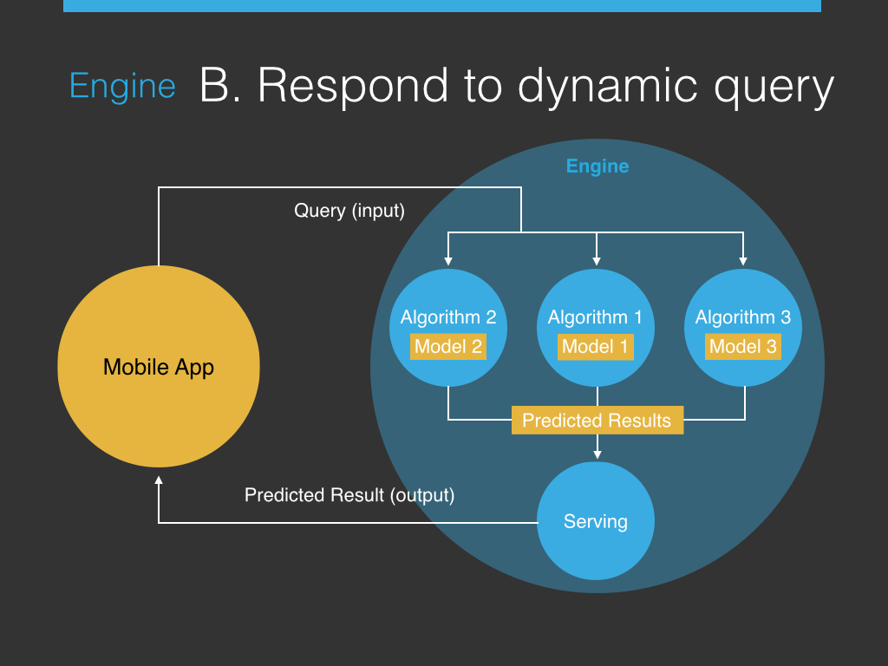

Introduction Prediction.io - DASE architecture
Van-Duyet Le / me@duyetdev.com
Building machine learning an application from scratch is hard.
Processing Framework
Algorithms Libraries
Data Storage
Integrate everything together nicely and move from prototyping to production?
Build and Deploy
Machine Intelligence
in a fraction of the time.
$ pio template get
$ cd MyEngine
$ pio build; pio train; pio deployData Source - readTraining()
Data Preparator - prepare()
Algorithm: - train()
- predict()
Serving - serve()
Evaluator - evaluate()cli = predictionio.EventClient("")
cli.record_user_action_on_item("view","John","HackerNews")
# predict top preferences
eng = predictionio.EngineClient("")
rec = eng.send_query({"uid":"John","n":5}) PredictionIO helps you modularize these components so you can build
Training a Model - The DASE View
Respond to Prediction Query - The DASE View
Query (Input) :
$ curl -H "Content-Type: application/json" -d
'{ "user": "1", "num": 4 }'
http://localhost:8000/queries.jsonPredicted Result (Output):
{“itemScores”:[{"item":"22","score":4.072304374729956},
{"item":"62","score":4.058482414005789},
{"item":"75","score":4.046063009943821}]}
$ bash -c "$(curl -s https://install.prediction.io/install.sh)"
Start the Event Server
$ pio eventserver
Deploy an Engine
$ pio build; pio train; pio deploy
Update Engine Model with New Data
$ pio train; pio deploy
Q&A